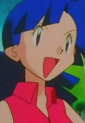
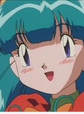
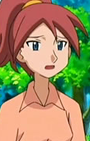

|
Honoka Yukishiro |
- Pretty Cure
- Pretty Cure Max Heart
- Pretty Cure Max Heart Movie
- Pretty Cure Max Heart Moive 2: Friends of the Snow-Laden Sky
- Pretty Cure All Stars GoGo Dream Live!
- Pretty Cure All Stars Movie DX: Minna Tomodachi Kiseki no Zenin Daishuugou
- Pretty Cure All Stars Movie DX2: Kibou no Hikari Rainbow Jewel o Mamore
- Pretty Cure All Stars Movie DX3: Reach the Future! The Rainbow Flower that Connects the World
- Pretty Cure All Stars New Stage: Future Friends
- Pretty Cure All Stars New Stage 2: Friends of the Heart
- Pretty Cure All Stars New Stage 3: Friends Forever
- Pretty Cure All Stars Movie: Spring Carnival
- Pretty Cure All Stars the Movie: Everyone Sing! Miraculous Magic
|
Honoka Yukishiro is a middle school student at Verone Academy who is a magical girl. She is the quiet and reserved one, but can be strict at times. Her specialty is the specialty is the science club, where everyone looks up to her. She has a friendship bond with Kiriya. Her alter ego is Cure White. |
|  |
Marina |
|
Marina is a water-type Pokemon Trainer that lives in the Orange Islands. She and Misty share the same enthusiasm for Water Pokemon. |
 |
Meiling Li |
- Cardcaptor Sakura
- Cardcaptor Sakura Movie 1
- Cardcaptor Sakura Movie 2: The Sealed Card
- Cardcaptor Sakura: Leave it to Kero-chan
- Cardcapter Sakura: Clear Card
|
Meiling Li is the cousin of Syaoran Li. She is mature and speaks politely. She cares for Syaoran and supports him and Sakura relationship. |
 |
Michelle Lobster |
|
Michelle Lobster or the Lucy Heartfilia's doll. She is a dedicated and passionate person. She is cheerful and happy. |
 |
Teletha Testrossa |
- Full Metal Panic!
- Full Metal Panic? Fumoffu
- Full Metal Panic! The Second Raid: Episode 00
- Full Metal Panic! The Second Raid
- Full Metal Panic! The Second Raid OVA
- Full Metal Panic! The Invisible Victory
|
Teletha Testrossa is the captain of Mithril. She is American but grew up living in military bases. She is a child prodigy who rosed to such a high rank at the age of 16. She is not athletical and very clumsy but charming and caring. Tessa is very smart when it comes to battlefield tactics. |
|  |
Temacu |
|
Temacu is one of the few girls to have romance feels for Brock. She is obsessed with marriage and love. Her name is combination of the first sound of 3 Pokemon. |
|  |
Theresa |
- Pokemon Diamond and Pearl
|
Theresa is the niece of Abigail. She loves her aunt and wants to see her happy. |
 |
Yumi Azusa |
|
Yumi Azusa is the Death Scythe in charge of East Asia. She is very pespectful to everyone. Yumi appears to be both bookish and analytical. She takes the form of a crossbow as her weapon form. She has a genius IQ, and is an extremely competent information tactician. |


.jpg)